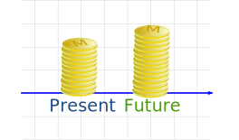
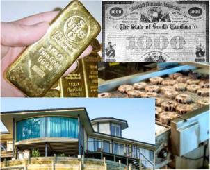

Investing (Introduction)
Investing
Investing is where you use money to (hopefully) make more money.
You can run a business.
You can put the money in the bank to earn interest.
You can buy something valuable, such as an antique or a rare coin, and sell it later.
You can buy a share of a company (such as on the stock exchange):
- They can pay dividends (regular payments to you based on their profit).
- AND you can sell the stock later, maybe for a higher price.
You can ... well there are LOTS of choices for investing money.
But how do you tell which are good and bad investments?
Risk and Reward
Unfortunately there is always RISK when investing.
- The company you put your money in might go bankrupt
- The people you loaned money to just disappear
- When you try to sell that rare coin no one wants to buy it, except at a very low price
- And that wonderful business might suddenly face big competition and lose money
Often the investments that promise the biggest profits are also the ones with the biggest risk.
As Reward goes up, Risk usually increases too.
Example: Banks pay low interest, but they are also low risk.
Example: That new gold mine that promises 30% profit? It may work out well, or it may just run out of gold and lose all the money.
Always remember: risk is risky! The more risk you take, the higher the chance that you will end up losing.
A risk can be worth taking, just be realistic about it.
How can you tell how risky an investment is? Ah! That is the million dollar question.
Do research! Find out all you can about how previous investments have worked out. Think about the future of the investment (things that are good now can turn bad), and also ... can you trust the people involved?
A big warning sign is: did they advertise or approach you? If they are spending time and money to get your money then watch out.
Before you hand over any money, stop being excited by the idea of profits and think what might go wrong. A wise friend once said it was the investments he didn't make that led to him being rich.
Comparing Investments
OK, you have some possible investments. The risks are about the same. How to tell which is best?
The basic idea is to add up all the money you receive, and subtract all the money you spend.
But you also need to think when you spend or receive the money.

Money now is more valuable than money later on.
Why? Because you can use money to make more money!
Example: A bank pays 10% interest on your money.
So $200 now can earn $200 x 10% = $20 in a year.
Your $200 now can become $220 in a year's time.
In fact, at 10% interest, $200 now is the same as $220 next year!
Learn more at Present Value
So money is not as valuable in the future, so we reduce the value of future payments.
Example: Two investments that both cost $200: one pays $220 next year, the other pays $230 in 2 years time.
Even though the $230 looks better, it is in 2 Years time.
The first investment pays $220 in 1 year. Reinvesting that $220 for another year might get you more than $230 by the 2nd year.
There are many ways to compare investments, but two of the most popular ways are:
When you have compared the possible investments, and thought about the risks, you are better prepared to make a decision.
Example: you run a Bakery, and want to improve its income. You could:
- Move the bakery to a busier street nearby (more customers)
- Renovate the kitchen (bake better things at less cost)
You estimate the costs and benefits, and then calculate the "Internal Rate of Return" of each to be:
- Move: IRR = 12%
- Renovate: IRR = 9%
So "Move" is best.
But hang on ... there are different risks!
- Move is more risky: will you really get more customers? What about the customers you lose? What if someone opens a bakery at your old location, they will take business away from you.
- Renovate is much less risky, you know it will save money for your present operation.
If the Move goes bad you could lose your whole business.
So choose carefully!
Diversify!
To diversify means to have different types of investments ("diverse" means "different").

Why diversify? It reduces the risk of losing everything!
Example: the whole economy goes bad!
Your business and stock market investments are in trouble.
But (hopefully) your money in the bank or with government bonds is still OK.
|
There is an old saying: don't put all your eggs in one basket. |
Some people recommend:
- one-third of your money into cash investments like a bank account or bonds,
- one-third into property, and
- one-third into the stock market.
But that is only a guide, you should decide for yourself what the best "spread of investments" is (and it can change, depending on how the economy is going).
One last thing ... good luck and good fortune!